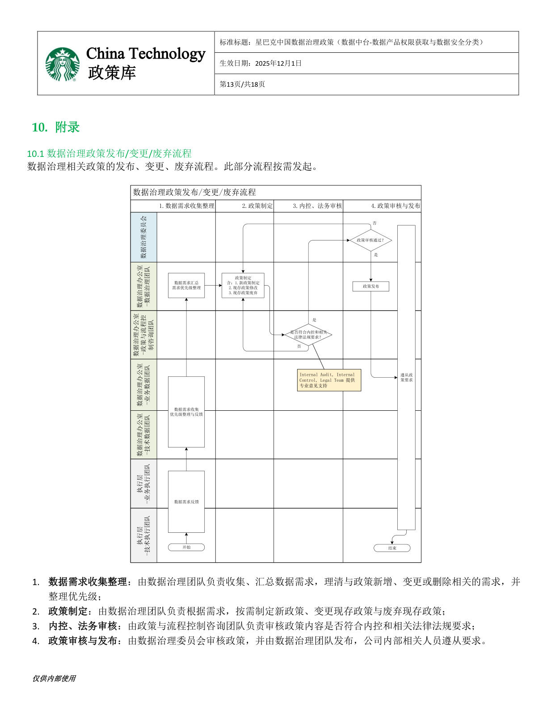
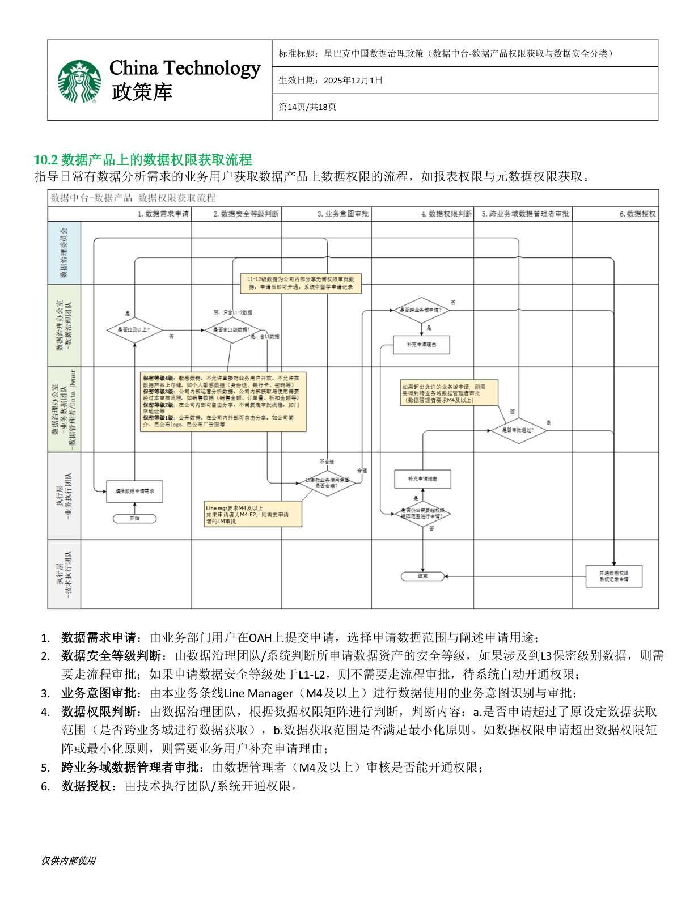
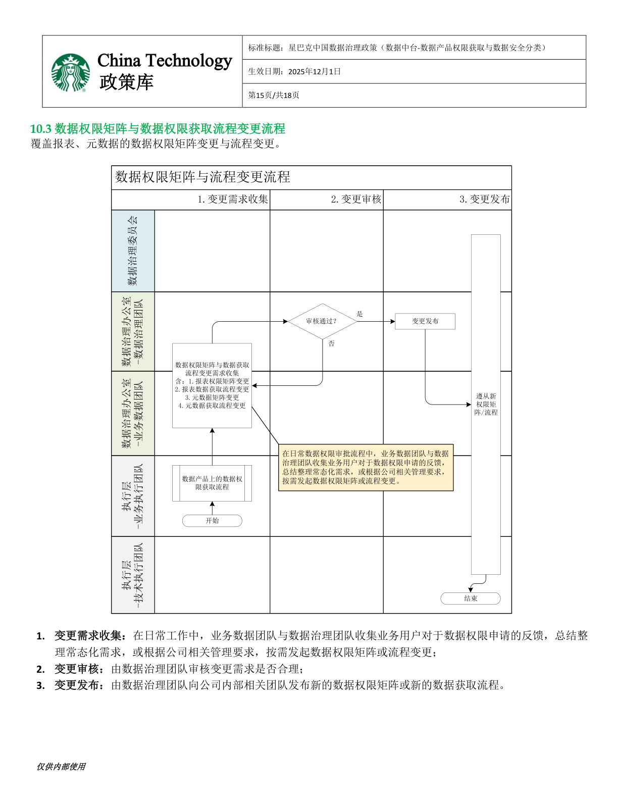
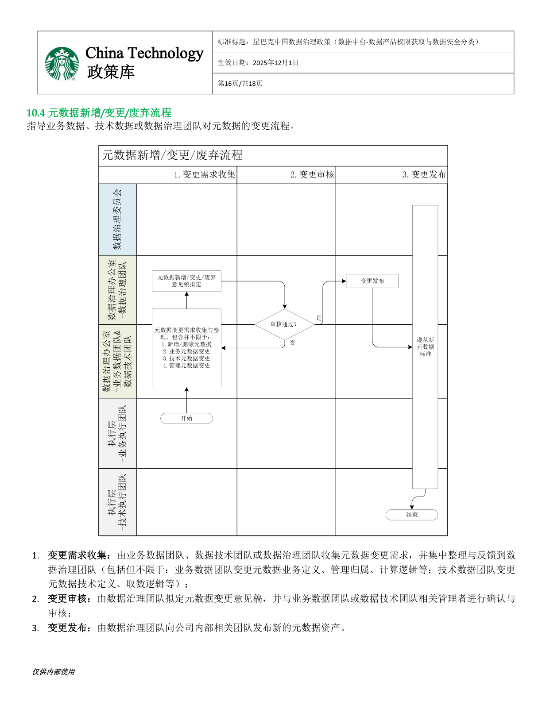

Starbucks China Data Governance Policy — Data Platform Product Access & Data Security Classification
本政策旨在规范星巴克中国数据中台的数据产品权限获取流程及数据安全分类标准，确保企业数据资产在安全、合规的前提下高效流通与利用。
This policy establishes the framework for data product access authorization and data security classification within the Starbucks China Data Platform. It ensures that enterprise data assets are utilized efficiently while maintaining security and compliance standards.
本政策适用于所有通过星巴克中国数据中台获取、使用、分发数据产品的内部员工及合作伙伴，规范数据获取与使用流程，保障数据中台上的数据资产在公司范围内被合理、合规使用。
全体星巴克中国内部员工在使用数据平台时需遵守本政策。
涉及数据交换的外部合作伙伴须按本政策执行数据安全分级与审批流程。
数据中台上的所有数据产品（报表、多维模型、原始数据）均纳入本政策管辖范围。
所有数据资产须按以下四级安全分类进行标注，分类结果直接决定数据的访问权限与分发方式。
| Level | Classification | 中文 | Description | Access Rule |
|---|---|---|---|---|
| L1 | Public | 公开数据 | Can be shared both internally and externally without restriction | Open access, no approval needed |
| L2 | Internal | 内部数据 | For internal use only; default for most employees, especially Data Dictionaries | Auto-granted to all internal users |
| L3 | Confidential | 内部保密数据 | Restricted business data; access requires explicit approval | Data Owner approval required |
| L4 | Private | 极高敏感数据 | Personally identifiable information (PII) — ID numbers, phone numbers, addresses | 🚫 Prohibited on this platform |
数据权限申请遵循分级审批制度，审批流程因申请人职级和数据安全等级而异。
| Applicant Type | Approval Flow |
|---|---|
| General Employee (below M4) | Line Manager → Data Office Review → System Provisioning |
| Senior Employee (M4 and above) | Skip Line Manager → Data Office Review → System Provisioning |
| Data Office Member | Self-approval → Auto Publish / Grant |
数据资产遵循标准化的生命周期管理流程，确保数据质量和时效性。
角色与管理职责严格参照《星巴克中国数据治理政策》第 5 章（5.1–5.4）。
| § | Role | 中文名称 | Key Responsibilities（主要职责） |
|---|---|---|---|
| 5.1 | Data Governance Team | 数据治理团队 | 数据治理办公室牵头团队。负责规划与协同数据治理工作，制定并发布数据治理路线图、政策、标准与流程；管理业务术语；协同制定数据质量预期与监测指标；界定数据需求范围并确定优先级；在公司内部组织数据治理培训推广。 |
| 5.2 | Technical Data Steward | 技术数据团队 | 将数据业务需求转化为技术解决方案。提供数据技术定义、数据字典及技术元数据；监控落地执行；提供问题或变更影响分析；负责数据标准技术属性的解释与应用指导，及技术团队内培训推广。 |
| 5.3 | Business Data Stewards | 业务数据团队 | 定义数据的业务含义与用途，配合推动数据治理机制建设。定义并管理业务术语表及业务/管理元数据；提出业务规则与数据质量预期；收集业务侧数据需求并确定优先级；遵从外部合规要求；负责业务团队内培训推广。 |
| 5.3.1 | Data Owner Sub-role of 5.3 |
数据管理者 | 由业务数据团队委派代表构成。拥有本主题域内数据的定义权与数据权限矩阵定义权；负责本主题域内元数据和数据权限的定义与管理；执行职责范围内数据权限审批（每主题域需指定至少 1 名）。 |
| 5.4 | Control & Advisor Team | 政策与流程控制咨询团队 | 审核数据治理政策、标准是否符合公司与外部法律、法规及监管要求；为内部政策与标准制定提供专业领域建议与支持（含 Internal Audit、Internal Control、Legal Team）。 |
以下内容严格参考《星巴克中国数据治理政策》附录 10.1、10.2、10.3、10.4、10.5，支持通过 Tab 查看 4 个流程，并展示权限矩阵。
按需发起：从需求收集到内控法务审核，再到治理委员会审核发布。
📎 参考流程图

业务用户在 OAH 申请后，按安全等级与权限矩阵判断是否进入审批。
📎 参考流程图

覆盖报表与元数据，处理权限矩阵与申请流程的常态化变更。
📎 参考流程图

指导业务数据、技术数据与治理团队协同完成元数据变更。
📋 参考流程图

说明：O = 可申请（本部门业务域，不需跨域审批）；√ = 可申请（跨业务域，需对应业务域数据管理者审批）；X = 不可申请。
| Function | Role | Sales | Product & Item | Promotion & Campaign | Customer | Supply Chain | Ops | Store | Finance | Legal | Partner |
|---|---|---|---|---|---|---|---|---|---|---|---|
| Insights & Analytics | M1+ | O | O | O | O | O | O | √ | √ | X | X |
| FP&A | M1+ | O | O | O | O | O | O | √ | O | X | X |
| CGO (DV) | M1+ | O | O | O | O | √ | √ | √ | √ | X | X |
| CGO (Category) | M1+ | √ | O | O | √ | √ | √ | √ | √ | X | X |
| CGO (Marketing) | M1+ | √ | √ | O | √ | √ | √ | √ | √ | X | X |
| OPS Services | M1+ | √ | √ | √ | √ | √ | O | √ | √ | X | X |
| PRO | M1+ | √ | √ | √ | √ | √ | √ | √ | √ | X | O |
| Legal | M1+ | √ | √ | √ | √ | √ | √ | √ | √ | O | X |
| SD | M1+ | √ | √ | √ | √ | √ | √ | O | √ | X | X |
| QA | M1+ | √ | √ | √ | √ | O | √ | √ | √ | X | X |
| SCO | M1+ | √ | √ | √ | √ | O | √ | √ | √ | X | X |
| Technology | M1+ | √ | √ | √ | √ | √ | √ | √ | √ | X | X |